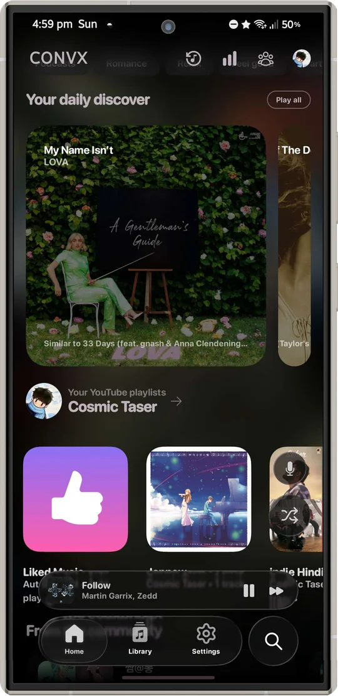
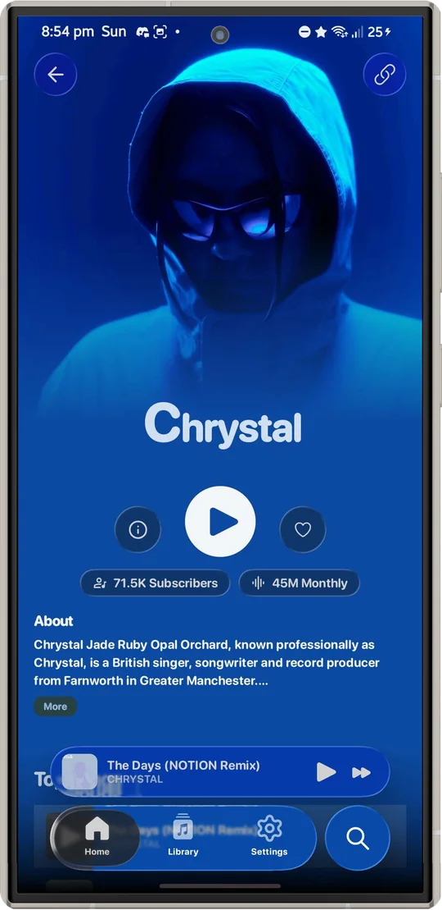
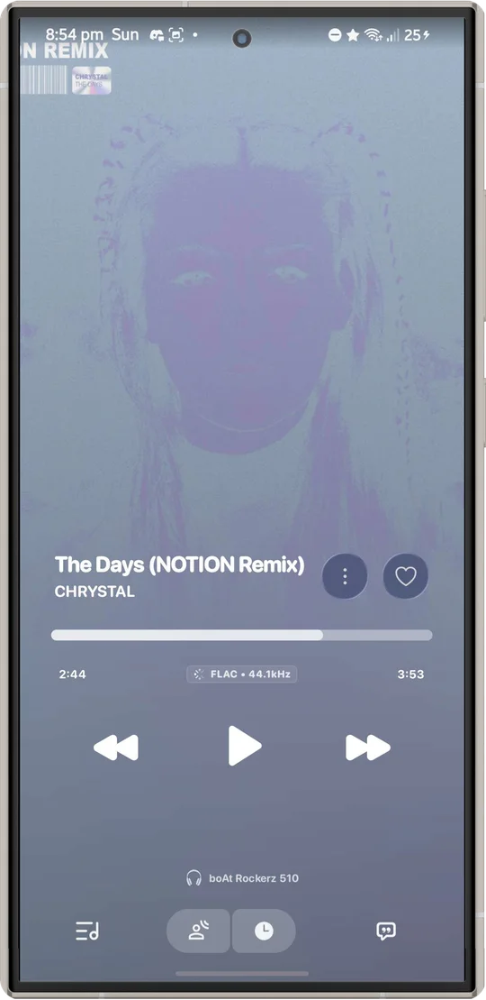
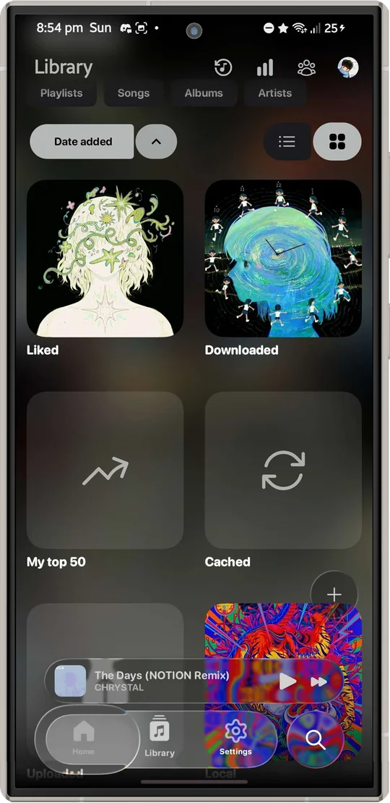
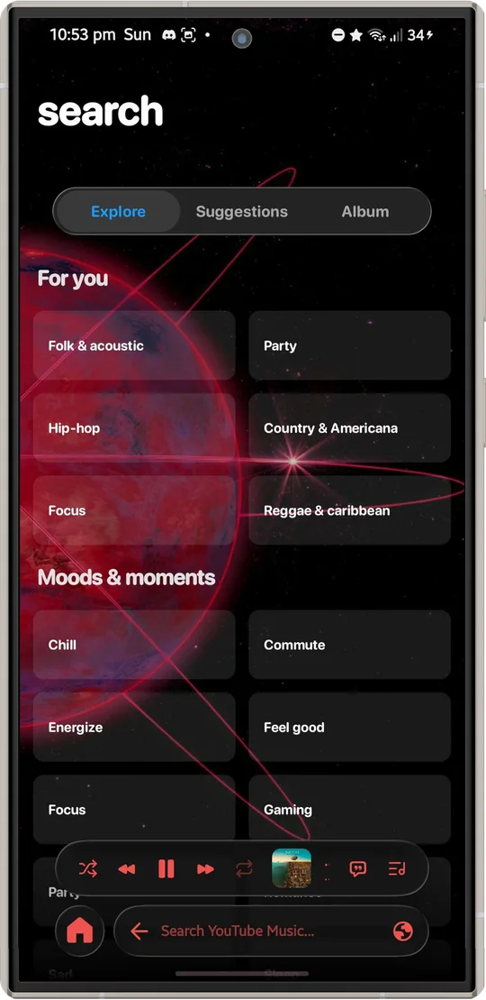

Playback
- Stream through Convx's InnerTube client
- Background, lock-screen and Android Auto controls
- Offline downloads and a local library
- Queues, playlists, sleep timer, speed and equalizer
- Crossfade, Automix and DJ-style transitions
Free and open source for Android
An open-source Android music player with a calm, glass-inspired interface. Discovery, playback, lyrics and your library, together in one app.


Real screens from the app. Colors follow whatever is playing.



A C, a V and a play button are the same shape. The ring is the C. The V turns on its side to close it, and points forward like play.
Use the latest Nightly from GitHub. The current Stable release is outdated and not working, and a refreshed one will follow once the remaining issues are fixed.
Nightlies are pre-release builds and may be unstable. On a 32-bit-only phone, choose the arm32 APK from the same release. Install APKs only from sources you trust. These downloads come from the original Convx project and don't include the changes in this repository yet.